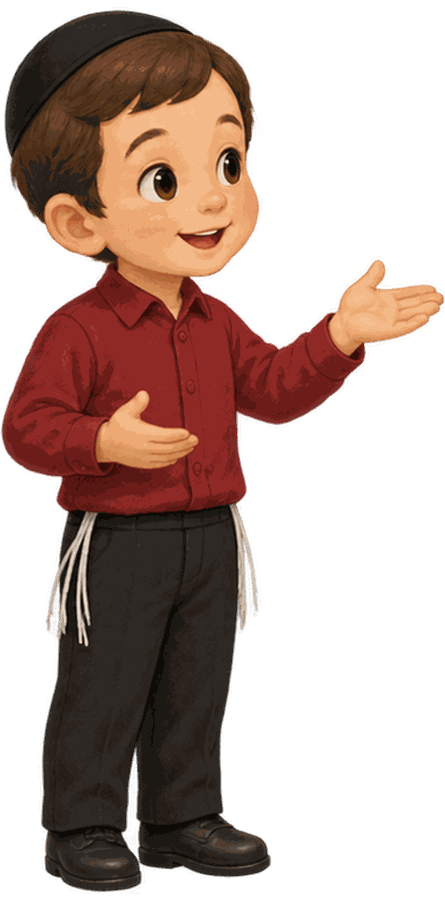

<!doctype html>
<html lang="en">
<head>
<meta charset="utf-8">
<meta name="viewport" content="width=device-width, initial-scale=1, viewport-fit=cover">
<title>Find the Mistake — Kindergarten Numbers</title>
<!-- Kindergarten Numbers, Unit 9 "Parts of 6 to 10": FIND THE MISTAKE. Ari made number bonds for the fruit plates at the market, and one number is wrong
     ("Three and one make five!"). The plates show the truth. He taps the wrong circle, then shows the right number on his fingers and taps the check.
     A wrong circle: "That one is right. Count the plates." A wrong number: we count the slices together. -->
<script type="importmap">{ "imports": { "three": "./lib/three.module.min.js" } }</script>
<link rel="stylesheet" href="frame.css"><link rel="stylesheet" href="unit5.css"><link rel="stylesheet" href="unit6.css">
<style>
.bond{ position:relative; width:clamp(200px,30vh,250px); height:clamp(130px,19vh,160px); }
.bond svg.lines{ position:absolute; inset:0; width:100%; height:100%; }
.bc{ position:absolute; width:clamp(64px,9.5vh,80px); height:clamp(64px,9.5vh,80px); border-radius:50%; background:#fff; border:5px solid #FF8A3D; display:flex; align-items:center; justify-content:center; padding:8px; box-shadow:0 5px 0 rgba(0,0,0,.12); }
.bc svg{ height:100%; width:auto; } .bc{ cursor:pointer; } #hp[hidden], #check[hidden]{ display:none; } .bc.picked{ box-shadow:0 0 0 6px #FFC93D; } .bc.wrongc{ border-color:#FF5A4E; } .bc.empty{ border-style:dashed; background:#FFF6E8; } .bc.good{ box-shadow:0 0 0 6px #22B45E; } .bc.shake{ animation:shake .45s; }
#bw{ left:50%; top:0; transform:translateX(-50%); border-color:#2FB5E8; } #b0{ left:0; bottom:0; } #b1{ right:0; bottom:0; }
#src .numcard{ width:clamp(64px,8.5vh,76px); height:clamp(64px,8.5vh,76px); }
@media (max-width:760px), (max-aspect-ratio:4/5){ .ui{ flex-wrap:wrap; } #src{ order:3; width:100%; } }
#hp .hands2{ width:clamp(220px,32vh,270px); gap:34px; padding-right:28px; } #hp .fhand{ margin-right:0 !important; width:auto !important; }
#hp .fhand .fdown{ width:64px; height:64px; right:-30px; bottom:-10px; }   /* the 'put one down' button sits beside each hand, never over its middle */
@media (max-width:760px), (max-aspect-ratio:4/5){ .ui{ flex-wrap:wrap; row-gap:6px; } .bond{ width:144px; height:96px; margin:0 calc(50% - 72px); } .bc{ width:50px; height:50px; } #hp .hands2{ width:262px; gap:30px; padding-right:28px; } #check{ width:72px; } }   /* phone: the bond on its own row, then big hands and the check */   /* phone: the bond and the hands share a row, so the plates stay in view */
.bc.lookc{ box-shadow:0 0 0 6px #FFC93D, 0 0 20px 6px rgba(255,201,61,.7); }
</style>
</head>
<body>
<div id="world"></div>
<div id="game" class="locked"><div class="stage s6" id="stage">
  <div class="ui" id="panel">
    <div class="bond"><svg class="lines" viewBox="0 0 100 64" preserveAspectRatio="none"><path d="M50 18 L16 48 M50 18 L84 48" stroke="#8A6A4A" stroke-width="2.5"/></svg>
      <div class="bc" id="bw"></div><div class="bc" id="b0"></div><div class="bc" id="b1"></div></div>
    <div id="hp" hidden></div>
    <button id="check" class="bigbtn btn3d b-sun" aria-label="Check" hidden><svg viewBox="0 0 48 48"><path d="M10 25l9 9 19-20" stroke="#2B2350" stroke-width="7" fill="none" stroke-linecap="round" stroke-linejoin="round"/></svg></button>
  </div>
</div></div>
<script src="kit.js"></script><script src="frame.js"></script><script src="unit5.js"></script>
<script type="module">
import { mount } from './market9.js';
const $ = id => document.getElementById(id);
let K, H, R, done;
const band = () => [innerWidth < 760 ? 80 : 92, $('panel').getBoundingClientRect().top - 8];
const ID = { w: 'bw', 0: 'b0', 1: 'b1' };
function truth(c) { return c === 'w' ? R.a + R.b : c === 0 ? R.a : R.b; }
function hooks() {
  if (R.stage === 'find') { const ok = ['w', 0, 1].find(c => c !== R.bad); GAME.right = () => [{ tap: '#' + ID[R.bad] }]; GAME.wrong = () => [{ tap: '#' + ID[ok] }]; return; }
  const k = truth(R.bad); GAME.right = () => H.moves(k, '#hp').concat([{ tap: '#check' }]); GAME.wrong = () => H.moves(k === 10 ? 9 : k + 1, '#hp').concat([{ tap: '#check' }]);
}
function open() { GAME.phase = 'answer'; FR.lock(false); H.lock(false); hooks(); }
function fill(id, n) { $(id).innerHTML = U5.num(n); }
async function countAll() { const all = K.plates.flatMap(p => p.children); await K.bumpAll(all, i => FR.say(FR.Word(i + 1) + (i === all.length - 1 ? '!' : ','), { noRepeat: true })); }
async function pick(c) {
  NK.unlock(); if (GAME.phase !== 'answer' || R.stage !== 'find') return; GAME.phase = 'busy'; FR.lock(true); const el = $(ID[c]);
  if (c === R.bad) { el.classList.add('wrongc'); NK.sound.yes(); await FR.say('Yes! That number is wrong.'); R.stage = 'fix'; $('hp').hidden = $('check').hidden = false; H.set(0);
    open(); await FR.say('Show the right number on your fingers.', { repeat: 'Count the plates. Show the right number. Then check.' }); return; }
  FR.oops(el); R.misses++; el.classList.add('lookc');   /* count what that circle stands for, while it glows */
  if (c === 'w') { await FR.say("Let's count all the fruit."); await countAll(); }
  else { const pl = K.plates[c]; await FR.say("Let's count this plate."); await K.bumpAll(pl.children, i => FR.say(FR.Word(i + 1) + (i === pl.children.length - 1 ? '.' : ','), { noRepeat: true })); }
  await FR.say('The circle says ' + FR.word(truth(c)) + '. That one is right.'); el.classList.remove('lookc'); if (R.misses >= 2) $(ID[R.bad]).classList.add('wrongc'); await FR.say(R.misses >= 2 ? 'The red one is wrong. Tap it.' : 'Which number is wrong?'); open();
}
async function check() {
  NK.unlock(); if (GAME.phase !== 'answer' || R.stage !== 'fix') return; GAME.phase = 'busy'; FR.lock(true); H.lock(true); const k = truth(R.bad), el = $(ID[R.bad]);
  if (H.count() === k) { fill(ID[R.bad], k); el.classList.remove('wrongc'); K.sparkle(0, 0.4); await FR.yes(el, 'Fixed! ' + FR.Word(R.a) + ' and ' + FR.word(R.b) + ' make ' + FR.word(R.a + R.b) + '.'); const d = done; done = null; d(R.misses === 0); return; }
  FR.oops($('check')); R.misses++;
  if (R.bad === 'w') { await FR.say("Let's look. Count all the fruit."); await countAll(); }
  else { const pl = K.plates[R.bad]; await FR.say("Let's count that plate."); await K.bumpAll(pl.children, i => FR.say(FR.Word(i + 1) + (i === pl.children.length - 1 ? '!' : ','), { noRepeat: true })); }
  H.set(0); await FR.say('Show me again.'); open();
}
const PLAN = [[5, 3, 'w', 9], [4, 4, 1, 3], [6, 2, 'w', 7], [3, 4, 0, 4], [5, 5, 'w', 9], [2, 5, 1, 4]];   /* [part, part, the wrong circle, Ari's wrong number] */
function play(F, i) {
  return new Promise(async res => {
    const [a, b, bad, said] = PLAN[i]; R = { a, b, bad, misses: 0, stage: 'find' }; done = res; GAME.phase = 'busy'; F.lock(true);
    $('hp').hidden = $('check').hidden = true; H.set(0);
    K.setPlates(a, b); ['bw', 'b0', 'b1'].forEach(id => $(id).classList.remove('wrongc')); fill('bw', bad === 'w' ? said : a + b); fill('b0', bad === 0 ? said : a); fill('b1', bad === 1 ? said : b);
    const A = bad === 0 ? said : a, B = bad === 1 ? said : b, W = bad === 'w' ? said : a + b;
    await F.say('Ari says: ' + F.word(A) + ' and ' + F.word(B) + ' make ' + F.word(W) + '!');
    open(); await F.say('Look at the plates. Tap the wrong number.', { repeat: 'One number is wrong. Tap it.' });
  });
}
FR.game({
  id: 'u9-mistake', title: 'Find the Mistake', rounds: 6,
  hero: '<div class="hero6"></div>',
  init() {
    K = mount($('world'), { kids: ['mendy', 'ari'], band }); H = U5.hands(0, true); $('hp').appendChild(H.el);
    $('bw').addEventListener('click', () => pick('w')); $('b0').addEventListener('click', () => pick(0)); $('b1').addEventListener('click', () => pick(1)); $('check').addEventListener('click', check);
  },
  demo: async F => {
    R = { a: 5, b: 2, bad: 'w', stage: 'demo' }; K.setPlates(5, 2); fill('bw', 8); fill('b0', 5); fill('b1', 2);
    await F.say('Ari says five and two make eight. Watch me check.'); await countAll(); await F.say('Seven, not eight! I tap the eight.');
    await F.handTo($('bw')); await F.handTap(); $('bw').classList.add('wrongc'); $('hp').hidden = $('check').hidden = false;
    await F.say('Then I show seven.'); await F.handTo(H.el, .5, .6); for (let t = 1; t <= 7; t++) { await F.handTap(); H.set(t); NK.sound.pop(); }
    await F.handTo($('check')); await F.handTap(); fill('bw', 7); $('bw').classList.remove('wrongc'); await F.say('Five and two make seven.'); H.set(0);
  },
  round: (F, i) => play(F, i),
  endSay: s => s >= 2 ? 'Ari says thank you! You fixed them all.' : 'Good looking! Let\'s play once more.'
});
</script>
</body>
</html>
